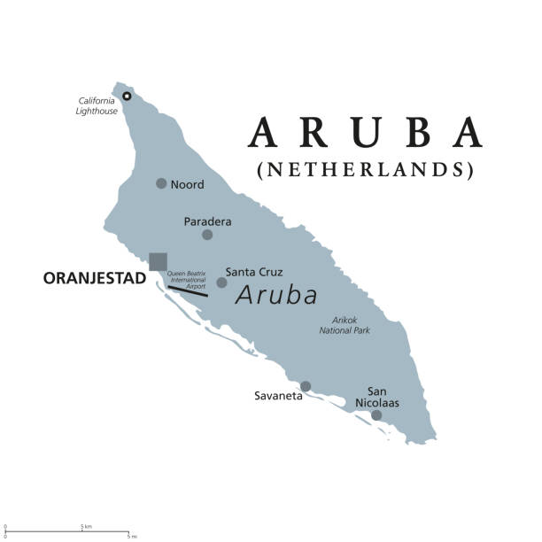

One happy island
Aruba, una pequeña isla del Caribe holandés frente a las costas de Venezuela, Para llegar desde Argentina, es necesario tomar un vuelo a Panamá o a Bogotá y desde allí, otro vuelo de una hora y media. Tiene un clima seco y soleado, playas claras y un oleaje suave. Los constantes vientos alisios traen brisas frescas y hacen que los árboles dividivi se inclinen hacia el suroeste.
La influencia europea se nota en la arquitectura con techos neerlandeses de dos aguas pintados en tonos pasteles tropicales. También es evidente en el idioma, ya que el inglés, el neerlandés y el español se hablan junto con la lengua local, el papiamento.
Ademas Aruba salio entre las mejores playas del mundo! una razon mas para querer conocer esta hermosa isla.